Equation Generation
Circuit Topology and Graph Theory
An electrical network can be represented by a graph whose nodes correspond to circuit nodes and whose branches correspond to two-terminal circuit elements. Assigning a reference direction to each branch produces a directed graph.
Each network branch has an associated current and voltage. The same network connectivity can be drawn with arrows indicating either current reference directions or voltage polarities. These drawings represent the same underlying graph.
|
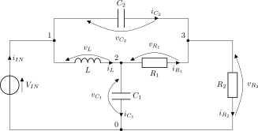 (a) |
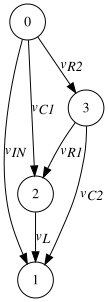 (b) |
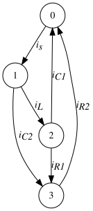 (c) |
Figure 1. A simple electrical network (a) and its corresponding directed branch voltage graph (b) and directed branch current graph (c).
In the branch-current graph, each arrow defines the reference direction for positive current. A negative calculated current indicates flow opposite to that arrow. In the branch-voltage graph, each arrow points towards the terminal defined as positive, so the branch voltage is the potential at the arrowhead minus the potential at the tail. These reference directions and polarities are retained when forming the KCL and KVL equations.
Graph Theory Definitions
A loop within a graph is a set of branches that form a closed path.
|
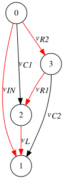 (a) |
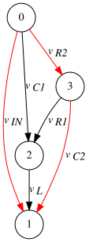 (b) |
(c) |
Figure 2. Three examples of closed loops within a simple graph.
A cut partitions the graph’s nodes into two nonempty, disjoint groups. The corresponding cut-set consists of all branches connecting the two groups. A surface is a visual boundary enclosing one node group; the branches crossing this boundary form the cut-set.
|
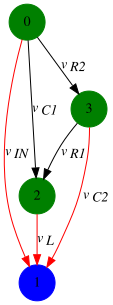 (a) |
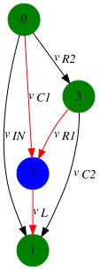 (b) |
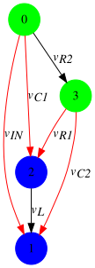 (c) |
Figure 3. Three examples of cuts within a simple graph.
A spanning tree is a connected subgraph that contains every node of the original graph and contains no loops. Any two nodes are connected by exactly one path through the spanning tree. Adding any branch from the original graph that is not already in the spanning tree creates a loop. A connected graph may have several possible spanning trees. The branches that do not belong to the selected spanning tree form the co-tree. Throughout this chapter, the term tree refers to a spanning tree.
|
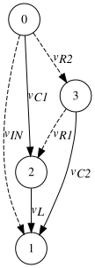 (a) |
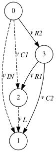 (b) |
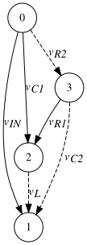 (c) |
Figure 4. Three examples of graph trees (solid lines) and corresponding co-trees (dashed lines).
A fundamental cut-set, also called a basic cut, contains exactly one branch of the selected spanning tree. A spanning tree with \(t\) branches defines \(t\) fundamental cut-sets.
|
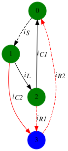 (a) |
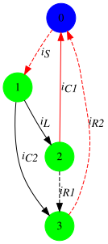 (b) |
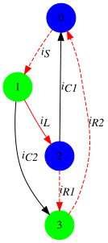 (c) |
Figure 5. Three examples of basic cuts.
A fundamental loop, also called a basic loop, contains exactly one co-tree branch. Adding a co-tree branch to the spanning tree creates its fundamental loop. There is one fundamental loop for each co-tree branch.
|
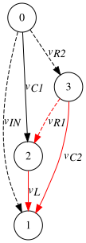 (a) |
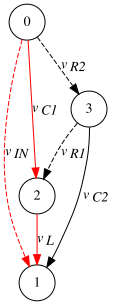 (b) |
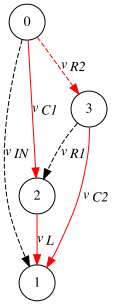 (c) |
Figure 6. Three examples of basic loops.
Kirchhoff’s Current Law (KCL)
Kirchhoff’s Current Law (KCL) establishes the relationship between the currents converging on a circuit node. The law states that the algebraic sum of the currents in all the branches that converge in a common node is equal to zero. Adopting the convention that current flow directed towards a node is positive, the KCL equations of the nodes for the electrical network displayed above are given below.
At node 0:
\[ i_{C_1} + i_{R_2} - i_S = 0 \tag{1}\]
At node 1:
\[ i_S - i_{C_2} - i_L = 0 \tag{2}\]
At node 2:
\[ i_L - i_{C_1} - i_{R_1} = 0 \tag{3}\]
At node 3:
\[ i_{R_1} + i_{C_2} - i_{R_2} = 0 \tag{4}\]
KCL also applies to a group of nodes: the algebraic sum of currents crossing the group’s boundary is zero. Taking currents entering the blue node group as positive, the three cut-sets in Figure 5 give:
| Panel | Enclosed nodes | KCL equation |
|---|---|---|
| (a) | \(\{3\}\) | \(i_{C_2}+i_{R_1}-i_{R_2}=0\) |
| (b) | \(\{0\}\) | \(i_{C_1}+i_{R_2}-i_S=0\) |
| (c) | \(\{0,2\}\) | \(i_L+i_{R_2}-i_S-i_{R_1}=0\) |
To understand why this generalisation of KCL is valid, consider the KCL equations of nodes 0 and 2, which form the enclosed node group in Figure 5(c):
\[ \begin{gathered} i_L - i_{C_1} - i_{R_1} = 0 \\ i_{C_1} + i_{R_2} - i_S = 0 \end{gathered} \tag{5}\]
Notice that branch current \(i_{C_1}\) appears in both equations and that it does not form part of the basic cut of Figure 5(c). Adding the equations of Equation 5:
\[ i_L + i_{R_2} - i_S - i_{R_1} = 0 \tag{6}\]
The result is identical to the equation obtained by applying KCL to the enclosed node group. Currents in branches internal to the group cancel, leaving only the currents crossing its boundary. For a fundamental cut-set, exactly one of those branches belongs to the spanning tree.
Independent KVL and KCL Equations
For a connected network with \(l\) branches and \(k\) nodes, there are \(p = k - 1\) independent KCL equations and \(m = l - k + 1\) independent KVL equations. These \(m\) KVL equations and \(p\) KCL equations form an independent set of topology constraints. The element constitutive relations are also required to determine the circuit response. Analysis of Equation 1 through Equation 4 shows that the equations are linearly dependent. If one equation is arbitrarily omitted, the remaining set of equations are linearly independent, as expected.
Independent State Variables
An ordinary state-space formulation uses independent state variables. If an algebraic constraint relates candidate state variables to each other and to the inputs, their initial values cannot be assigned independently. A dependent variable must be eliminated, or the constraint must be retained in a differential-algebraic formulation. For the ideal, uncoupled RLC networks considered here, two relevant topologies impose such constraints:
- Loops consisting exclusively of capacitive elements and/or voltage sources
- Cut-sets consisting exclusively of inductors and/or current sources
Figure 7. A simple electrical network displaying a capacitive loop.
As an example of condition 1, consider the network shown above which displays a loop consisting of three capacitors and a voltage source. The KVL equation of this loop may be written as:
\[ v_{in} - v_{C_1} - v_{C_2} + v_{C_3} = 0 \tag{7}\]
Equation 7 imposes an algebraic constraint between \(v_{C_1}\), \(v_{C_2}\), \(v_{C_3}\), and the source voltage \(v_{in}\). Any one of the capacitor voltages can therefore be expressed in terms of the other two and the source voltage. Consequently, their initial values cannot be assigned independently; they must satisfy \(v_{C_1}(t_0)+v_{C_2}(t_0)-v_{C_3}(t_0)=v_{in}(t_0)\). The three capacitor voltages cannot all serve as independent state variables in an ordinary state-space formulation. One voltage must be eliminated using Equation 7, or all three may be retained in a differential-algebraic formulation that explicitly includes this constraint.
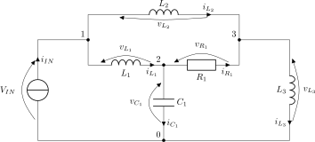
Figure 8. A simple electrical network displaying a node connected only to inductive branches and current sources.
As an example of condition 2, consider the network shown above in which node 1 is connected to two inductive branches and a current source. The KCL equation for node 1 may be written as:
\[ i_S - i_{L_1} - i_{L_2} = 0 \tag{8}\]
Equation 8 imposes an algebraic constraint between \(i_{L_1}\), \(i_{L_2}\), and the source current \(i_S\). Either inductor current can therefore be expressed in terms of the other and the source current. Consequently, their initial values cannot be assigned independently; they must satisfy \(i_{L_1}(t_0)+i_{L_2}(t_0)=i_S(t_0)\). The two currents cannot both serve as independent state variables in an ordinary state-space formulation. One current must be eliminated using Equation 8, or both currents may be retained in a differential-algebraic formulation that explicitly includes this constraint.
Selection of State Variables
A proper tree is a spanning tree selected to identify independent capacitor voltages and inductor currents. For the ideal RLC networks considered here, branches are selected in the following order:
- All independent voltage-source branches must be included, provided that these branches do not form a loop.
- The maximum possible number of branches corresponding to a capacitor should be selected. Recall that the definition of a tree prohibits graph loops and as such, it may not be possible to include every capacitor of the network in the proper tree.
- The maximum possible number of branches corresponding to a resistor should be selected such that the definition of tree is not violated.
- Include as many inductor branches as necessary to complete the tree. A cut-set consisting only of ideal current sources requires separate treatment.
The selected state variables are the voltages of tree capacitors and the currents of co-tree inductors. This construction assumes that the ideal voltage sources do not form a loop and that no cut-set consists exclusively of ideal current sources. Such source-only configurations require separate consistency and solvability analysis.
|
(a) |
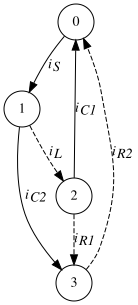 (b) |
Figure 9. A simple electrical network and the corresponding proper tree. Solid lines indicate proper tree branches. Dashed lines indicate proper co-tree branches.
As an example of identifying the proper tree, consider the network and corresponding proper tree shown above. Notice that both capacitor branches of the network are members of the proper tree (solid lines) and that the inductor branch is a member of the proper co-tree (dashed lines). The state vector of this network may therefore be written as:
\[ \mathbf{x} = \begin{bmatrix} v_{C_1} \\ v_{C_2} \\ i_L \\ \end{bmatrix} \]
If resistor \(R_1\) of the figure above is replaced with a capacitor, the network and corresponding proper tree is as shown in the figure below.
|
(a) |
(b) |
Figure 10. A simple electrical network and the corresponding proper tree demonstrating a capacitive/voltage source loop.
Notice that the above network exhibits a loop consisting of three capacitors and a voltage source. Only the \(C_1\) and \(C_2\) capacitor branches are members of the proper tree. If \(C_3\) were to be included then a loop would be formed, violating the definition of the proper tree. This is an example of where not all capacitor branches can be included in the proper tree. Note that an equally valid proper tree may be formed using any two of the capacitor branches and the choice of which two to use is arbitrary. The three capacitor voltages satisfy the constraint in Equation 7, so the voltage not selected as a state variable can be calculated from the other two voltages and the input. For the example shown above, \(v_{C_3}\) may be calculated as:
\[ v_{C_3} = v_{C_1} + v_{C_2} - v_{in} \]
The state vector for the network shown above may be written as:
\[ \mathbf{x} = \begin{bmatrix} v_{C_1} \\ v_{C_2} \\ i_L \\ \end{bmatrix} \]
Recall that branches corresponding to inductors may be required to complete the proper tree. Such a situation arises when a node exists that is connected only to inductors and current sources. An example of such a network and its corresponding proper tree are shown below. An equally valid proper tree may be formed by selecting either \(L_1\) or \(L_2\) to complete the tree.
|
(a) |
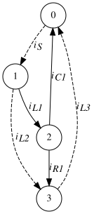 (b) |
Figure 11. A simple electrical network and the corresponding proper tree demonstrating a node connected only to inductors and current sources.
The state vector for the network shown above may be written as:
\[ \mathbf{x} = \begin{bmatrix} v_{C_1} \\ i_{L_2} \\ i_{L_3} \\ \end{bmatrix} \]
Inductor \(L_1\) completes the proper tree, but its current is not an independent state variable. The current \(i_{L_1}\) is determined by the source current and the selected state current \(i_{L_2}\) through KCL at node 1:
\[ i_{L_1} = i_S - i_{L_2} \]
Fundamental Cut-set Matrix (Qf)
The branch-current vector \(\mathbf{i}\) and branch-voltage vector \(\mathbf{v}\) are defined as:
\[ \begin{aligned} \mathbf{i} &= [i_S,\,i_{C_2},\,i_L,\,i_{C_1},\,i_{R_1},\,i_{R_2}]^{\mathsf T},\\[4pt] \mathbf{v} &= [v_{in},\,v_{C_2},\,v_L,\,v_{C_1},\,v_{R_1},\,v_{R_2}]^{\mathsf T}. \end{aligned} \]
The fundamental cut-set matrix \(\mathbf{Q_f}\) expresses the KCL equations for the fundamental cut-sets of a network. The spanning tree shown in Figure 5 contains three tree branches and therefore has three fundamental cut-sets.
Removing one branch from the spanning tree divides the tree into two connected parts. The removed branch, together with all co-tree branches connecting those parts, forms the corresponding fundamental cut-set. For the tree shown in Figure 5, the fundamental cut-sets are:
- \(C_2\): branches \(C_2\), \(R_1\), and \(R_2\).
- \(C_1\): branches \(C_1\), \(R_2\), and the source branch.
- \(L\): branches \(L\), \(R_1\), \(R_2\), and the source branch.
For the fundamental cut-set associated with \(C_2\), taking currents leaving the node group \(\{0,1,2\}\) as positive gives:
\[ i_{C_2} + i_{R_1} - i_{R_2} = 0 \tag{9}\]
For the fundamental cut-set associated with \(C_1\), taking currents leaving the node group \(\{1,2,3\}\) as positive gives:
\[ i_{C_1} + i_{R_2} - i_S = 0 \tag{10}\]
For the fundamental cut-set associated with \(L\), taking currents leaving the node group \(\{1,3\}\) as positive gives:
\[ i_L + i_{R_2} - i_S -i_{R_1} = 0 \tag{11}\]
Equation 9, Equation 10 and Equation 11 may be compactly expressed in matrix form:
\[ \begin{bmatrix} 0 & 1 & 0 & 0 & 1 & -1 \\ -1 & 0 & 0 & 1 & 0 & 1 \\ -1 & 0 & 1 & 0 & -1 & 1 \end{bmatrix} \begin{bmatrix} i_S \\ i_{C_2} \\ i_L \\ i_{C_1} \\ i_{R_1} \\ i_{R_2} \end{bmatrix} = \mathbf{0} \tag{12}\]
\[ \mathbf{Q_f} \mathbf{i} = \mathbf{0} \tag{13}\]
Here, \(\mathbf{i}\) denotes the branch-current vector displayed in Equation 12.
Fundamental Basic Loop Matrix (Bf)
The fundamental basic loop matrix \(\mathbf{B_f}\) expresses the algebraic relationship of the branch voltages around the basic loops of a network. It can be derived once the co-tree of the network has been identified. For example, the proper tree shown in Figure 6 has three co-tree branches and therefore the KVL equations may be written as:
\[ v_{R_1} + v_L - v_{C_2} = 0 \tag{14}\]
\[ v_{in} - v_L - v_{C_1} = 0 \tag{15}\]
\[ v_{R_2} + v_{C_2} - v_L - v_{C_1} = 0 \tag{16}\]
Equation 14, Equation 15 and Equation 16 may be compactly expressed in matrix form:
\[ \begin{bmatrix} 0 & -1 & 1 & 0 & 1 & 0 \\ 1 & 0 & -1 & -1 & 0 & 0 \\ 0 & 1 & -1 & -1 & 0 & 1 \end{bmatrix} \begin{bmatrix} v_{in} \\ v_{C_2} \\ v_L \\ v_{C_1} \\ v_{R_1} \\ v_{R_2} \end{bmatrix} = \mathbf{0} \tag{17}\]
\[ \mathbf{B_f} \mathbf{v} = \mathbf{0} \tag{18}\]
Here, \(\mathbf{v}\) denotes the branch-voltage vector displayed in Equation 17.
Formulation of Network Equations
For the networks considered here, the circuit equations can be constructed as follows:
- Identify any valid proper tree. State variables can be determined.
- Identify the basic loops and basic cuts for the selected proper tree.
- For each basic cut, derive the KCL equation corresponding to the surfaces created by this basic cut.
- For each basic loop, derive the corresponding KVL equation.
- Substitute the constitutive relationships into the derived equations and perform any necessary algebraic manipulations.
As an example of the above process, consider the network and corresponding proper tree shown in the figure below.
|
(a) |
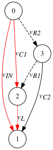 (b) |
Figure 12. A simple electrical network and corresponding spanning tree (solid lines). The branches highlighted in red form the fundamental loop associated with inductor \(L\).
Since capacitors \(C_1\) and \(C_2\) are members of the proper tree and inductor \(L\) is a member of the co-tree, the state vector of the system may be written as:
\[ \mathbf{x} = \begin{bmatrix} v_{C_1} \\ v_{C_2} \\ i_L \\ \end{bmatrix} \]
Applying KVL to the fundamental loops of the selected tree gives the matrix \(\mathbf{B_f}\). The fundamental loop associated with inductor \(L\) is highlighted above.
\[ \mathbf{B_f} = \begin{bmatrix} -1 & 0 & 1 & 1 & 0 & 0 \\ 1 & -1 & 0 & -1 & 1 & 0 \\ -1 & 1 & 0 & 0 & 0 & 1 \\ \end{bmatrix} \tag{19}\]
The corresponding branch-voltage vector satisfies:
\[ \mathbf{B_f} \begin{bmatrix} v_{in} \\ v_{C_2} \\ v_L \\ v_{C_1} \\ v_{R_1} \\ v_{R_2} \\ \end{bmatrix} = \mathbf{0} \]
The first row of \(\mathbf{B_f}\) gives the inductor voltage. Using \(v_L=L\,di_L/dt\) gives:
\[ \begin{bmatrix} L \\ \end{bmatrix} \begin{bmatrix} \frac{di_L}{dt} \\ \end{bmatrix} = \begin{bmatrix} v_{in} - v_{C_1} \\ \end{bmatrix} \tag{20}\]
Applying KCL to the fundamental cut-sets of the selected tree gives the matrix \(\mathbf{Q_f}\). The node groups defining the cut-sets for capacitors \(C_1\) and \(C_2\) are shown below.
|
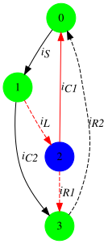 (a) |
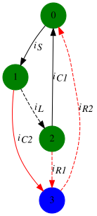 (b) |
Figure 13. Basic cuts for capacitors \(C_1\) and \(C_2\) used to analyse the network shown above.
If the convention that current flows in a positive direction through capacitors \(C_1\) and \(C_2\) is adopted, the \(\mathbf{Q_f}\) matrix may be written as:
\[ \mathbf{Q_f} = \begin{bmatrix} 1 & 0 & -1 & 0 & 1 & -1 \\ 0 & 1 & 0 & 0 & 1 & -1 \\ 0 & 0 & -1 & 1 & 1 & 0 \\ \end{bmatrix} \tag{21}\]
The corresponding branch-current vector satisfies:
\[ \mathbf{Q_f} \begin{bmatrix} i_S \\ i_{C_2} \\ i_L \\ i_{C_1} \\ i_{R_1} \\ i_{R_2} \\ \end{bmatrix} = \mathbf{0} \]
The first row of \(\mathbf{Q_f}\) determines the input source current. The remaining rows give the currents in \(C_2\) and \(C_1\). Using \(i_C=C\,dv_C/dt\) gives:
\[ \begin{bmatrix} C_{2} & 0 \\ 0 & C_{1} \\ \end{bmatrix} \begin{bmatrix} \frac{dv_{C_2}}{dt} \\ \frac{dv_{C_1}}{dt} \\ \end{bmatrix} = \begin{bmatrix} i_{R_2} - i_{R_1} \\ i_L - i_{R_1} \\ \end{bmatrix} \tag{22}\]
Equation 20 and Equation 22 specify the state derivatives in terms of the state variables, input voltage, and resistor currents. The resistor currents \(i_{R_1}\) and \(i_{R_2}\) can be determined from the \(\mathbf{B_f}\) equations for the corresponding branches:
\[ v_{in} - v_{C_2} - v_{C_1} + v_{R_1} = 0 \tag{23}\]
\[ -v_{in} + v_{C_2} + v_{R_2} = 0 \tag{24}\]
Isolating the resistor voltages in Equation 23 and Equation 24, and applying Ohm’s law, gives:
\[ \begin{aligned} i_{R_1} &= \frac{v_{C_1}+v_{C_2}-v_{in}}{R_1},\\[4pt] i_{R_2} &= \frac{v_{in}-v_{C_2}}{R_2}. \end{aligned} \]
Substituting the resistor-current expressions into the capacitor and inductor equations gives an explicit state-space model:
\[ \begin{aligned} \frac{dv_{C_1}}{dt} &=\frac{1}{C_1}\left(i_L-\frac{v_{C_1}+v_{C_2}-v_{in}}{R_1}\right),\\[6pt] \frac{dv_{C_2}}{dt} &=\frac{1}{C_2}\left(\frac{v_{in}-v_{C_2}}{R_2}-\frac{v_{C_1}+v_{C_2}-v_{in}}{R_1}\right),\\[6pt] \frac{di_L}{dt} &=\frac{v_{in}-v_{C_1}}{L}. \end{aligned} \]
The state derivatives depend only on the selected state variables, the input voltage, and the component values. Given an input waveform and initial conditions, these equations can be integrated to obtain the transient response.
For a co-tree resistor, its fundamental-loop KVL equation determines its voltage from the tree-branch voltages; Ohm’s law then gives its current. For a tree resistor, its fundamental-cut-set KCL equation determines its current from the co-tree branch currents; Ohm’s law then gives its voltage.